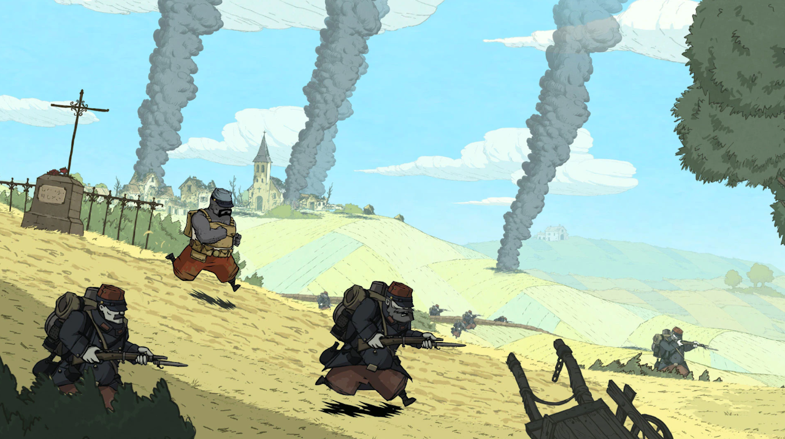

- Art des Spiels
- Digitales Spiel
- Plattformen
- Verschiedene Plattformen (inkl. iPad (Netflix Games))
- Genre
- Side-Scroller, Puzzle, Adventure
- Altersfreigabe
- USK 12 Jahren, PEGI 12 Jahre
- Spieleranzahl
- Einzelspieler
- Spieldauer
- Ca. 4 Stunden. Es können auch nur einzelne Kapitel oder Abschnitte gespielt werden.
- Kosten
- ca. 10.- CHF
- Einstiegsschwierigkeitsgrad
- Einfach
Kurzbeschreibung
"Valiant Hearts: The Great War" ist ein emotional bewegendes Puzzle-Adventure-Spiel, das während des Ersten Weltkriegs spielt und die verwobenen Schicksale von vier Charakteren erzählt. Entwickelt von Ubisoft Montpellier und veröffentlicht im Jahr 2014, kombiniert es Puzzle-Elemente mit Stealth- und Actionsequenzen, eingebettet in eine tiefgründige Geschichte über Liebe, Erlösung und Überleben. Durch seinen einzigartigen grafischen Stil und die Nutzung historischer Ereignisse bietet das Spiel eine berührende und aufklärende Erfahrung über das Grauen des Krieges und die Menschlichkeit in dunklen Zeiten.
Besondere Merkmale
Das herausragendste Merkmal von "Valiant Hearts: The Great War" ist seine emotionale Erzählung, die tiefgreifende Geschichten über Liebe, Verlust und Menschlichkeit gegen den Hintergrund des Ersten Weltkrieges webt. Ergänzt wird diese durch den einzigartigen grafischen Stil, der handgezeichnete Kunst nutzt, um eine visuell eindrucksvolle und atmosphärisch dichte Spielwelt zu schaffen. Diese beiden Aspekte zusammen sorgen für ein unvergleichlich berührendes Spielerlebnis, das sowohl emotional bewegt als auch visuell fesselt.
Besondere Anforderungen
(Keine)
Lernpotenzial
Historisches Wissen: Durch seine Einbettung in den historischen Kontext des Ersten Weltkriegs vermittelt das Spiel detaillierte Informationen über diese Ära. Dazu gehören wichtige Schlachten, die beteiligten Nationen, die verwendeten Waffen und Geräte sowie die allgemeinen Lebensbedingungen der Menschen zu dieser Zeit. Es präsentiert historische Fakten und Ereignisse auf eine Weise, die leicht zugänglich und verständlich ist.
Empathie und menschliche Perspektive: Indem es die Geschichten von individuellen Charakteren mit verschiedenen Hintergründen und Nationalitäten erzählt, fördert "Valiant Hearts" das Verständnis und die Empathie für die menschlichen Aspekte des Krieges. Spieler erleben die emotionalen Höhen und Tiefen der Charaktere, ihre Kämpfe und Hoffnungen, was ein tiefes Verständnis für die Auswirkungen des Krieges auf das
Unterrichtsrelevanz
Kann beispielsweise im Geschichtsunterricht des Zyklus 3 eingesetzt werden.
Links und Quellen
https://www.ubisoft.com/de-de/game/valiant-hearts
https://games-im-unterricht.de/games/valiant-hearts-great-war
Fazit
“Valiant Hearts: The Great War" eignet sich hervorragend für den Einsatz im Schulunterricht, da es historisches Wissen über den Ersten Weltkrieg auf eine zugängliche und emotional ansprechende Weise vermittelt. Durch die Kombination von realen historischen Ereignissen mit den persönlichen Geschichten der Charaktere fördert es Empathie und ein tieferes Verständnis für die menschlichen Aspekte des Krieges. Das Spiel regt zudem zum kritischen Denken und zu ethischen Überlegungen an. Es kann als interdisziplinäres Lehrmittel dienen, das Themen wie Geschichte, Literatur und Kunst miteinander verbindet. Kurz gesagt, "Valiant Hearts" bietet eine einzigartige pädagogische Ressource, die Schülern hilft, die Komplexität des Ersten Weltkriegs und seine Auswirkungen auf die Welt zu verstehen und zu reflektieren.